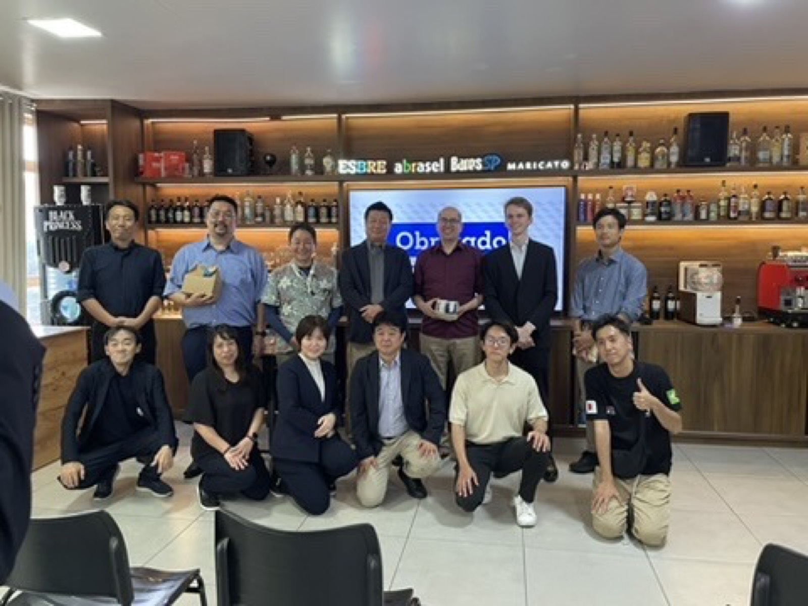

目的・担当範囲・現地での実行・結果を一つの事例として公開します。

サンパウロ日本祭りでの現場実践から、全国の地域産品が集まる場へ。第3回は企画・運営として参画しました。
郷土料理、産品、生産者の背景を一つの体験として届け、現地の食関係者・コミュニティとの会話を生み出す企画。
外国人材が日本の技術・文化・企業・地域を体験し、自国での事業化へつなげる来日研修プログラム。
対象、予算、時期が未定でも構いません。現在分かっていることと、まだ決まっていないことを整理します。